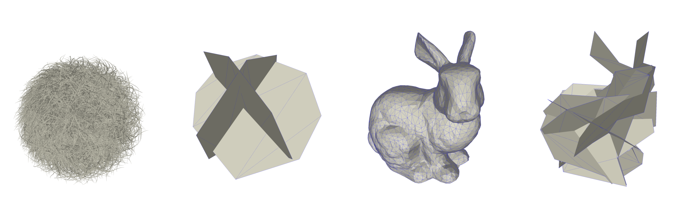

Left: Hairball and simplified occluder with 16 triangles (0.0005% of original). Right: Bunny and simplified
occluder with 64 triangles (1.3% of original).
AbstractWe present a method for extreme occluder simplification. We take a triangle soup as input, and produce a small set of polygons with closely matching occlusion properties. In contrast to methods that optimize the original geometry, our algorithm has very few requirements for the input - specifically, the input does not need to be a watertight, two-manifold mesh. This robustness is achieved by working on a well-behaved, discretized representation of the input instead of the original, potentially badly structured geometry. We first formulate the algorithm for individual occluders, and further introduce a hierarchy for handling large, complex scenes.DownloadsBibtex
@article {Silvennoinen2014CGF,
author = {Silvennoinen, Ari and Saransaari, Hannu and Laine, Samuli and Lehtinen, Jaakko},
title = {Occluder Simplification Using Planar Sections},
journal = {Computer Graphics Forum},
volume = {33},
number = {1},
issn = {1467-8659},
url = {http://dx.doi.org/10.1111/cgf.12271},
doi = {10.1111/cgf.12271},
pages = {235--245},
year = {2014},
}
Ari Silvennoinen, Feb 28 2014 |